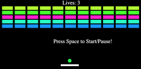

- Senior Software Developer at CollegeSource, Inc.
- Master of Science in Software Development at Boston University.
- Bachelor of Science in Computer Science at the University of Southern Indiana.
- Linkedin: Justin Neighbors
- Blog: justn.dev
- Dark Mode Enabled (via your browser settings)
Experienced Software Developer with a demonstrated history of working in the higher education industry. Skilled in Java, JavaScript, Python, jQuery, SQL, HTML5, CSS3, XML, Handlebars JS, Bootstrap 4, Font Awesome 5, Apache FreeMarker, JAWR, COBOL, Spring Framework, Hibernate, TensorFlow, Keras, Apache Ant, Eclipse (STS), Git/CVS, Tomcat, MS SQL Server, PostgreSQL, macOS, Windows, Linux, AWS EC2 / RDS / S3 / IAM / Lambda / DMS / CodeCommit, and Accessibility in the Web.
Career
As a full-stack Software Developer on Transferology.com and TransferologyLab.com, I write Java in the Spring MVC Framework, Javascript (including jQuery, and Handlebars.js), SQL, HQL, HTML (including Freemarker, Bootstrap, and Font Awesome), and CSS.
As a Programmer Analyst, I wrote custom implementations of interfaces between student information systems and the software suite, in Java and SQL using the Spring Framework, JDBC and Hibernate for database access. I also installed and configured the software suite based on client requirements.
My first job after graduating from college was as a COBOL Developer at a finance company. I worked there from May until December 2011. I started at CollegeSource, Inc. on December 1, 2011, as a Programmer Analyst in the Services & Support Department. I transferred to the Product Development Department in January 2016 to become a Software Developer for Transferology, TransferologyLab, and back-end processes.
Education
I graduated from Boston University with a Master's in Software Development in May 2019. The Master's degree covered topics such as Python, Data Structures and Algorithms, Advanced Programming Techniques, Database Management, Agile Software Development, Software Design Patterns, Systems Analysis and Design, and Machine Learning using Tensor Flow.
I graduated from the University of Southern Indiana with a Bachelor of Science in Computer Science in May 2011.
Projects
-
Machine Learning – Neural Network
Using Student Statistics to Predict Target Transfer Schools

-
Q Learning with Snake
Training a Q Learning Model to Play Snake

-
HTML5 Games
Games Written using the HTML5 Canvas
-
Brick Breaker
 -
Snake
-